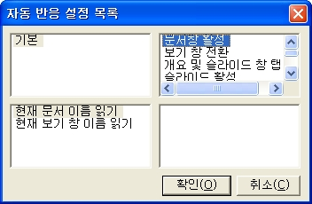

자동 반응 설정에서 지원하는 파워포인트 이벤트는 다음과 같습니다.

파워포인트 문서창으로 활성이 변경된 경우 발생합니다.
보기 형식을 변경하거나 '기본 보기' 상태에서 <F6>, <Shift-F6> 키를 사용해 창을 전환한 경우 발생합니다.
'기본 보기'의 '개요 및 슬라이드 창'에서 <Ctrl-Tab>, <Ctrl-Shift-Tab> 키를 사용해
탭을 전환한 경우 발생합니다.
활성 슬라이드가 변경된 경우 발생합니다.
슬라이드 쇼 상황에서 슬라이드가 변경된 경우 발생합니다.
개체 포커스가 변경된 경우 발생합니다.
편집 상태에서 <위화살표>, <아래화살표>, <Pgup>, <Pgdn> 등을 사용해 줄 이동한 경우 발생합니다.
편집 상태에서 <Ctrl-좌화살표>, <Ctrl-우화살표> 키를 사용해 단어 이동한 경우 발생합니다.
편집 상태에서 <좌화살표>, <우화살표>, <Home>, <End> 등을 사용해 글자 이동한 경우 발생합니다.
슬라이드 쇼 상황에서 줄 이동한 경우 발생합니다.
슬라이드 쇼 상황에서 단어 이동한 경우 발생합니다.
슬라이드 쇼 상황에서 글자 이동한 경우 발생합니다.
표 내에서 <Tab>, <Shift-Tab> 키를 사용해 셀 간 이동한 경우 발생합니다.
선택 영역이 변경된 경우 발생합니다.
개체 포커스 상태에서 <Enter>, <F2> 등으로 편집 상태로 들어갈 때 발생합니다.
** 가상커서: 내용을 살펴보기 위해 센스리더 내부적으로 사용하는 커서로 화면에 나타나지 않는 커서입니다. 슬라이드 쇼 상황에서는 가상커서가 동작하며 방향키를 사용해 가상커서를 이동합니다.
개체 포커스 상태에서 화살표키를 눌러 개체의 위치를 변경시킬 때 발생합니다.
센스리더는 파워포인트에 대해 다음의 기능들을 지원합니다. 여기에 나열된 기능들은 자동 반응 설정이나 키 반응 설정에서 연결
기능으로 지정되어야 실제 동작을 하게 됩니다. 세부 동작과 추가 기능을 실행하기 위해 옵션과 팝업 메뉴를 가진 기능들이 정의되어 있음으로 주의하도록 합니다.
[] 현재 문서 이름 읽기
현재 문서 이름(파일명)을 읽어줍니다.
[] 현재 보기 창 이름 읽기
포커스된 보기창(슬라이드, 개요 및 슬라이드, 노트, 여러 슬라이드) 등을 읽어줍니다.
[] 개요 및 슬라이드 창 탭 이름 읽기
현재 보기 창이 '개요 및 슬라이드'일 경우 현재 탭 종류를 읽어줍니다.
[] 슬라이드 제목 읽기
활성 슬라이드에 제목 개체가 있는 경우 제목을 읽어줍니다.
[] 슬라이드 내용 읽기
활성 슬라이드의 전체 내용(개체종류, 개체 내용)을 읽어줍니다.
[] 슬라이드 번호 읽기
현재 활성된 슬라이드 번호를 읽어줍니다.
[] 슬라이드 상태 읽기
캐럿 이동 등으로 활성 슬라이드가 바뀐 경우에 슬라이드 번호를 읽어줍니다.
[] 슬라이드 목록
문서 내 모든 슬라이드를 목록으로 보여줍니다. 원하는 항목을 선택 후 <Enter> 키를 누르면 해당 슬라이드가 활성됩니다.
[] 슬라이드 노트 모드 토글
슬라이드 쇼 상황에서 슬라이드 모드와 노트 모드를 전환합니다. 슬라이드 모드에서는 슬라이드 내용이 가상커서의 내용이 되고 노트 모드에서는 슬라이드 노트가 가상커서의 내용이 됩니다. 슬라이드가 넘어가면 자동으로 슬라이드 모드로 전환됩니다.
[] 현재 개체 유형 읽기
포커스된 개체의 종류를 읽어줍니다.
[] 현재 개체 내용 읽기
포커스된 개체의 내용을 읽어줍니다.
[] 현재 개체 번호 읽기
슬라이드 내에서의 개체 순서와 총 개체 수를 읽어줍니다.
[] 현재 개체 위치 읽기
슬라이드 좌상단에서 개체 좌상단까지의 거리(좌측, 위쪽)를 포인트단위로 알려줍니다.
[] 현재 개체 크기 읽기
개체의 크기(넓이, 높이)를 포인트단위로 알려줍니다.
[] 개체 개수 읽기
활성 슬라이드의 전체 개체 개수를 읽어줍니다.
[] 개체 목록
활성 슬라이드의 전체 개체를 목록으로 보여줍니다. 원하는 항목을 선택 후 <Enter> 키를 누르면 해당 개체가 선택됩니다.
[] 링크 열기
현재 개체에 링크가 지정되어 있는 경우 링크를 엽니다.
[] 링크 목록
활성 슬라이드 내의 전체 링크를 목록으로 보여줍니다. 원하는 항목을 선택 후 <Enter> 키를 누르면 해당 링크가 열립니다.
[] 현재 글자 읽기
편집 상태에서는 캐럿 위치의 글자, 가상커서 상태에서는 가상커서 위치의 글자를 읽어줍니다.
[] 현재 단어 읽기
편집 상태에서는 캐럿 위치의 단어, 가상커서 상태에서는 가상커서 위치의 단어를 읽어줍니다.
[] 현재 줄 읽기
편집 상태에서는 캐럿 위치의 줄, 가상커서 상태에서는 가상커서 위치의 줄을 읽어줍니다.
-- 세부 옵션 --
1) 빈줄 알림: 빈 줄일 경우 "빈줄"이라 알려줄지 여부를 선택합니다.
[] 현재 문단 읽기
편집 상태에서 캐럿 위치의 문단을 읽어줍니다.
[] 문단 수준 읽기
현재 문단의 들여쓰기 수준을 읽어줍니다.
[] 글꼴 읽기
현재 텍스트의 글꼴을 읽어줍니다.
[] 선택영역 읽기
슬라이드가 선택된 경우 선택 슬라이드 범위를, 텍스트가 선택된 경우 선택 텍스트 전체 내용을 읽어줍니다.
[] 선택영역 상태 읽기
선택 영역의 변화 상황을 읽어줍니다.
[] 활성 셀 주소 읽기
캐럿이 테이블 내에 있는 경우 현재 셀 위치를 읽어줍니다.
-- 세부 옵션 --
1) 읽기 방식: 행열 방식으로 읽을지 A1방식으로 읽을지 선택합니다.
2) 읽기 종류: 행만 읽을지, 열만 읽을지, 모두 읽을지를 선택합니다.
3) 전체 개수 읽기: 행, 열의 총 개수를 읽어줄지 여부를 선택합니다.
[] 활성 셀 내용 읽기
캐럿이 테이블에 있을 경우 현재 셀 전체 내용을 읽어줍니다.
-- 세부 옵션 --
1) 빈셀 알림: 셀 내용이 없는 경우 "빈셀"이라 알려줄지 여부를 선택합니다.
[] 셀 상태 읽기
캐럿이 테이블 내에 있을 때 캐럿 이동으로 다른 셀로 진입했을 경우 셀 주소를 읽어줍니다.
-- 세부 옵션 --
1) 읽기 방식: 행열 방식으로 읽을지 A1방식으로 읽을지 선택합니다.
2) 읽기 종류: 행만 읽을지, 열만 읽을지, 모두 읽을지를 선택합니다.
3) 전체 개수 읽기: 행, 열의 총 개수를 읽어줄지 여부를 선택합니다.
[] 행 제목 읽기
캐럿이 표 안에 있을 때 현재 행의 첫번째 셀 내용을 읽어줍니다.
[] 열 제목 읽기
캐럿이 표 안에 있을 때 현재 열의 첫번째 셀 내용을 읽어줍니다.
[] 행 읽기
현재 행의 셀들을 차례로 읽어줍니다.
-- 세부 옵션 --
1) 빈셀 알림: 셀에 내용이 없을 경우 "빈셀"이라 알려줄지 여부를 선택합니다.
2) 읽기 범위: 읽기 원하는 셀의 범위를 선택합니다. 전체, 현재 셀까지, 현재 셀부터의 세 가지 옵션이 있습니다.
[] 열 읽기
현재 열의 셀들을 차례로 읽어줍니다.
-- 세부 옵션 --
1) 빈셀 알림: 셀에 내용이 없을 경우 "빈셀"이라 알려줄지 여부를 선택합니다.
2) 읽기 범위: 읽기 원하는 셀의 범위를 선택합니다. 전체, 현재 셀까지, 현재 셀부터의 세 가지 옵션이 있습니다.
[] 가상 셀 주소 읽기
가상 셀 포인터 위치의 셀 주소를 읽어줍니다.
-- 세부 옵션 --
1) 읽기 방식: 행열 방식으로 읽을지 A1방식으로 읽을지 선택합니다.
2) 읽기 종류: 행만 읽을지, 열만 읽을지, 모두 읽을지를 선택합니다.
3) 전체 개수 읽기: 행, 열의 총 개수를 읽어줄지 여부를 선택합니다.
** 가상셀 포인터란 표 내의 셀들을 살펴보는데 활용하기 위해 센스리더에서 내부적으로 사용하는 셀 포인터로 화면에 위치가 표시되지 않는 가상의 포인터입니다.
[] 가상 셀 내용 읽기
가상 셀 포인터 위치의 셀 내용을 읽어줍니다.
-- 세부 옵션 --
1) 빈셀 알림: 셀 내용이 없는 경우 "빈셀"이라 알려줄지 여부를 선택합니다.
[] 가상 셀 왼쪽으로 이동
가상 셀 포인터를 좌로 한 셀 이동합니다.
[] 가상 셀 위로 이동
가상 셀 포인터를 위로 한 셀 이동합니다.
[] 가상 셀 오른쪽으로 이동
가상 셀 포인터를 오른쪽으로 한 셀 이동합니다.
[] 가상 셀 아래로 이동
가상 셀 포인터를 아래로 한 셀 이동합니다.
[] 가상 셀 행 처음으로 이동
가상 셀 포인터를 행의 처음 셀로 이동합니다.
[] 가상 셀 행 끝으로 이동
가상 셀 포인터를 행의 마지막 셀로 이동합니다.
[] 가상 셀 열 처음으로 이동
가상 셀 포인터를 열의 처음 셀로 이동합니다.
[] 가상 셀 열 끝으로 이동
가상 셀 포인터를 열의 마지막 셀로 이동합니다.
[] 활성 셀을 가상 셀로 이동
가상 셀 포인터 위치로 캐럿을 이동합니다.
[] 가상 셀을 활성 셀로 이동
가상 셀 포인터를 캐럿이 있는 셀 위치로 이동합니다.
센스리더는 POWER POINT 활용을 위한 다음의 단축키들을 제공합니다.
여기에 정의된 단축키들은 전체 지원 기능 중에서 필수적인 기능들만을 선별하여 단축키로 정의한 것이며, 사용자들은 필요에 따라 원하는 기능을 단축키로 정의하여 사용할 수 있습니다.
기능 설명 중 | 기호는 해당 단축키를 반복해서 누를 때 실행되는 기능을 의미합니다.
1. Ctrl-Shift-Enter
링크 열기
2. Ctrl-Shift-B
선택영역 읽기
3. Ctrl-Shift-F
현재 개체 유형 읽기, 현재 개체 내용 읽기, 현재 개체 번호 읽기 | 슬라이드 번호 읽기 | 현재 문서 이름 읽기
4. Ctrl-Shift--(대쉬)
현재 개체 위치 읽기, 현재 개체 크기 읽기
5. Ctrl-Alt-Enter
활성 셀을 가상 셀로 이동, 활성 셀 내용 읽기, 활성 셀 주소 읽기
6. Shift-Alt-C
열 제목 읽기
7. Shift-Alt-L
링크 목록
8. Shift-Alt-N
슬라이드 노트 모드 토글
9. Shift-Alt-O
개체 목록
10. Shift-Alt-R
행 제목 읽기
11. Shift-Alt-S
슬라이드 목록
12. Ctrl-Shift-Alt-Enter
가상 셀을 활성 셀로 이동, 가상 셀 내용 읽기, 가상 셀 주소 읽기
13. Ctrl-Shift-Alt-C
열 읽기
14. Ctrl-Shift-Alt-R
행 읽기
15. Ctrl-Shift-Alt-X
키 반응 설정 선택
16. Ctrl-Shift-Alt-Z
자동 반응 설정 선택
17. Ctrl-Insert-A
글꼴 읽기
18. Ctrl-Alt-왼쪽 방향키
가상 셀 왼쪽으로 이동, 가상 셀 내용 읽기, 가상 셀 주소 읽기
19. Ctrl-Alt-위 방향키
가상 셀 위쪽으로 이동, 가상 셀 내용 읽기, 가상 셀 주소 읽기
20. Ctrl-Alt-오른쪽 방향키
가상 셀 오른쪽으로 이동, 가상 셀 내용 읽기, 가상 셀 주소 읽기
21. Ctrl-Alt-아래 방향키
가상 셀 아래쪽으로 이동, 가상 셀 내용 읽기, 가상 셀 주소 읽기